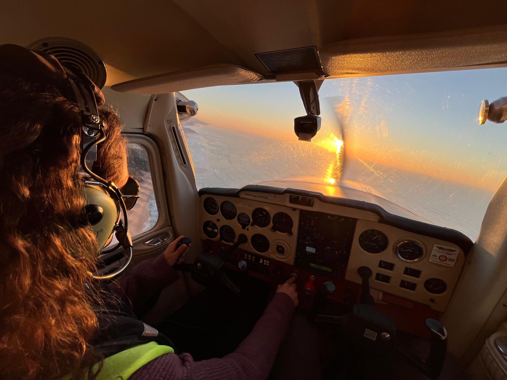
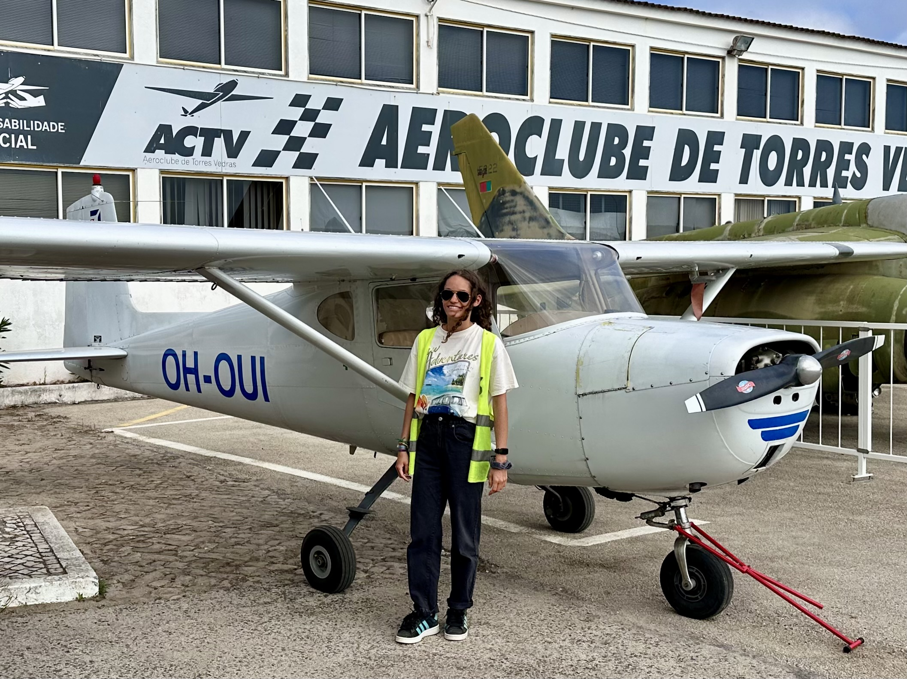
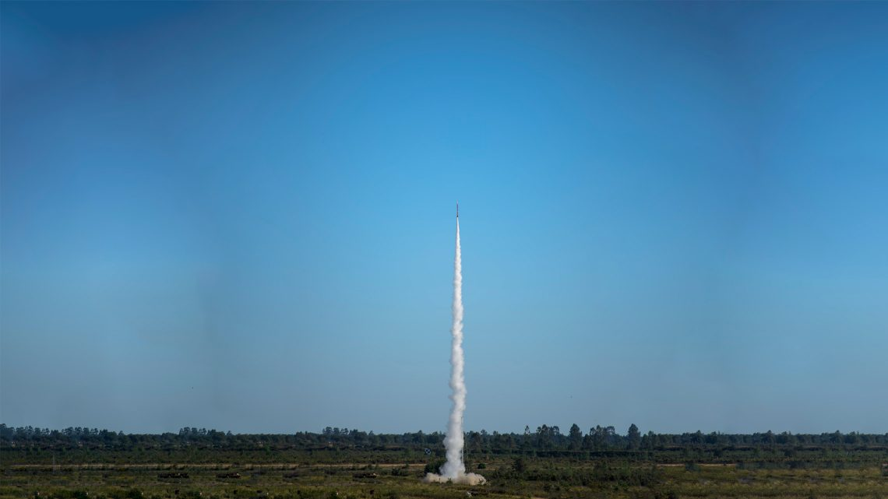
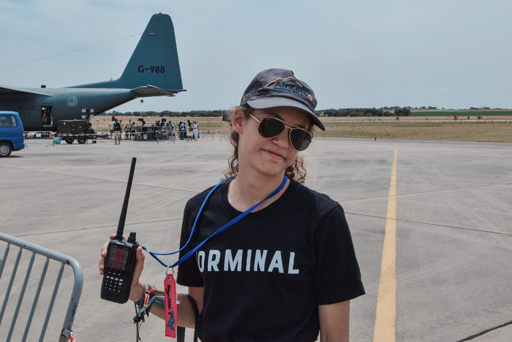
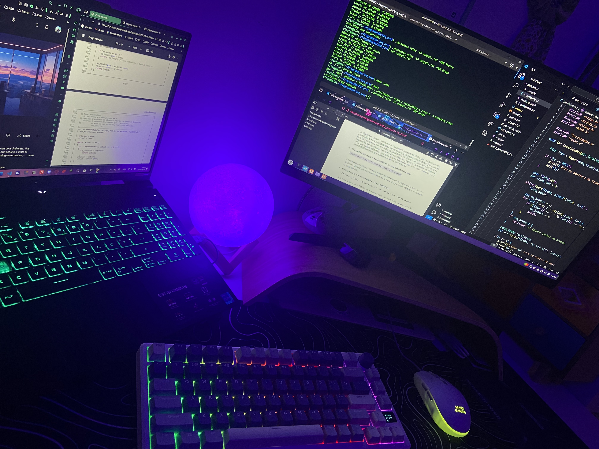

I’m a second-year Aerospace Engineering BSc student at Instituto Superior Técnico, aiming to major in Avionics.
My main interests include Aeronautical and Space Telecommunications Systems and Security, as well as General Aviation - besides Engineering, I also love to fly!

Active member of ACTV (Aeroclube de Torres Vedras) since 2022, where I volunteer in flight operations support, aircraft and hangar maintenance, and help organize events such as our annual airshow and cinema sessions in the hangar. I also design posters and social media content to promote the club’s activities and aviation courses. When on-site, I love welcoming visitors and explain the club’s mission of bringing aviation and science closer to the local community.


Part of RED (Rocket Experiment Division) team at IST, which competes in the annual EuRoC competition, as a member of two subteams:
Licensed amateur radio operator (CS7BKH) since 2023 with a passion for RF communications. I began with the foundational class and upgraded in 2025 to CEPT Novice Amateur License (Class 2). I have communicated with multiple stations around the world, including MIT’s W1MX. Some other RF-related activities I enjoy include airband listening and experimenting with Software Defined Radio (SDR), such as receiving ADS-B aircraft tracking data.


Interested in programming and its applications in aerospace systems, with some knowledge in Python and C. Lately, I've also been interested in cybersecurity and its intersection with aviation and space communications, and have been learning more about the area by exploring Capture The Flag (CTF) challenges. Beyond aerospace projects, I also enjoy web development, having created small websites for family and friends as well as this personal portfolio.
Here you’ll find short articles where I share some notes and thoughts on themes I enjoy, as aviation, space, satellites, communications, radios, tech, cyber…, and how they all can connect
more to come...
Institutional email: ritamgomes@tecnico.ulisboa.pt
Amateur Radio email: cr7bkh@gmail.com
LinkedIn: Rita Gomes
GitHub: ritamtgomes